Chapter 3: Vector Autoregressive Methods¶
Introduction
Previously, we have introduced the classical approaches in forecasting single/univariate time series like the Autoregressive-Moving-Average (ARIMA) model and the simple linear regression model. We learned that stationarity is a condition that is necessary when using ARIMA while this need not be imposed when using the linear regression model. In this notebook, we extend the forecasting problem to a more generalized framework where we deal with multivariate time series–time series which has more than one time-dependent variable. More specifically, we introduce vector autoregressive (VAR) models and show how they can be used in forecasting mutivariate time series.
Chapter Outline
Multivariate Time Series model
Motivation
Univariate VS Multivariate Time Series
Examples
Foundations
Vector Autoregressive (VAR) Models
VAR(1) model
VAR(p) model
Choosing the order p
Building a VAR model
Structural Analysis
Impulse Response Function
Forecast Error Variance Decomposition
Takeaways
References
References: The contents of this notebook are compiled from the references listed here.
Prepared by: Maria Eloisa Ventura
Multivariate Time Series Model¶
Motivation¶
To understand the dynamic relationships over time among the series
To improve accuracy of forecasts for individual series by utilizing the additional information available from the related series in the forecasts for each series
Definition: Univariate vs Multivariate Time Series¶
Time series can either be univariate or multivariate. The term univariate time series consists of single observations recorded sequentially over equal time increments. When dealing with a univariate time series model (e.g., ARIMA), we usually refer to a model that contains lag values of itself as the independent variable.
On the other hand, a multivariate time series has more than one time-dependent variables. For a multivariate process, several related time series are observed simultaneously over time. As an extension of the univariate case, the multivariate time series model involves two or more input variables, and leverages the interrelationship among the different time series variables.
import numpy as np
import pandas as pd
import statsmodels.tsa as tsa
from statsmodels.tsa.vector_ar.var_model import VAR, FEVD
from statsmodels.tsa.arima_model import ARIMA
from statsmodels.tsa.stattools import acf, adfuller, ccf, ccovf, kpss, coint
from statsmodels.graphics.tsaplots import plot_acf
from statsmodels.tsa.vector_ar.vecm import coint_johansen
import matplotlib.pyplot as plt
import mvts_utils as utils
import seaborn as sns
import warnings
warnings.filterwarnings("ignore")
pd.set_option('display.max_rows', None)
pd.set_option('display.max_columns', None)
%load_ext autoreload
%autoreload 2
Examples of Multivariate Time Series¶
Air Quality Data from UCI¶
The dataset contains hourly averaged measurements obtained from an Air Quality Chemical Multisensor Device which was located on the field of polluted area at an Italian city. The dataset can be downloaded here.
aq_df = pd.read_excel("../data/AirQualityUCI/AirQualityUCI.xlsx", parse_dates=[['Date', 'Time']])\
.set_index('Date_Time').replace(-200, np.nan).interpolate()
aq_df.head(2)
| CO(GT) | PT08.S1(CO) | NMHC(GT) | C6H6(GT) | PT08.S2(NMHC) | NOx(GT) | PT08.S3(NOx) | NO2(GT) | PT08.S4(NO2) | PT08.S5(O3) | T | RH | AH | |
|---|---|---|---|---|---|---|---|---|---|---|---|---|---|
| Date_Time | |||||||||||||
| 2004-03-10 18:00:00 | 2.6 | 1360.00 | 150.0 | 11.881723 | 1045.50 | 166.0 | 1056.25 | 113.0 | 1692.00 | 1267.50 | 13.6 | 48.875001 | 0.757754 |
| 2004-03-10 19:00:00 | 2.0 | 1292.25 | 112.0 | 9.397165 | 954.75 | 103.0 | 1173.75 | 92.0 | 1558.75 | 972.25 | 13.3 | 47.700000 | 0.725487 |
fig,ax = plt.subplots(5, figsize=(16,10), sharex=True)
plot_cols = ['CO(GT)', 'NO2(GT)', 'C6H6(GT)', 'T', 'RH']
aq_df[plot_cols].plot(subplots=True, legend=False, ax=ax)
for a in range(len(ax)):
ax[a].set_ylabel(plot_cols[a])
ax[-1].set_xlabel('')
plt.tight_layout()
plt.show()
Global Health from The World Bank¶
This dataset combines key health statistics from a variety of sources to provide a look at global health and population trends. It includes information on nutrition, reproductive health, education, immunization, and diseases from over 200 countries. The dataset can be downloaded here.
ind_df = pd.read_csv('../data/WorldBankHealth/WorldBankHealthPopulation_SeriesSummary.csv')\
.loc[:,['series_code', 'indicator_name']].drop_duplicates().reindex()\
.sort_values('indicator_name').set_index('series_code')
hn_df = pd.read_csv('../data/WorldBankHealth/WorldBankHealthPopulation_HealthNutritionPopulation.csv')\
.pivot(index='year', columns='indicator_code', values='value')
cols = ['SH.XPD.KHEX.GD.ZS', 'SH.XPD.CHEX.GD.ZS', 'SH.XPD.GHED.GD.ZS']
health_expenditure_df = hn_df.loc[np.arange(2000, 2018), cols]\
.rename(columns = dict(ind_df.loc[cols].indicator_name\
.apply(lambda x: '_'.join(x.split('(')[0].split(' ')[:-1]))))
health_expenditure_df.index = pd.date_range('2000-1-1', periods=len(health_expenditure_df), freq="A-DEC")
health_expenditure_df.head(2)
| indicator_code | Capital_health_expenditure | Current_health_expenditure | Domestic_general_government_health_expenditure |
|---|---|---|---|
| 2000-12-31 | 0.013654 | 3.154818 | 1.400685 |
| 2001-12-31 | 0.012675 | 2.947059 | 1.196554 |
fig, ax = plt.subplots(3, 1, sharex=True, figsize=(16, 7))
health_expenditure_df.plot(subplots=True, ax=ax, legend=False)
y_label = ['Capital health expenditure', 'Current health expenditure',
'Domestic general government\n health expenditure']
for a in range(len(ax)):
ax[a].set_ylabel(f"{y_label[a]}\n (% of GDP)")
plt.tight_layout()
plt.show()
US Treasury Rates¶
January, 1982 – December, 2016 (Weekly) https://essentialoftimeseries.com/data/ This sample dataset contains weekly data of US Treasury rates from January 1982 to December 2016. The dataset can be downloaded here.
treas_df = pd.read_excel("../data/USTreasuryRates/us-treasury-rates-weekly.xlsx")
treas_df = treas_df.rename(columns={'Unnamed: 0': 'Date'}).set_index('Date')
treas_df.index = pd.to_datetime(treas_df.index)
treas_df.head(1)
| 1-month | 3-month | 6-month | 1-year | 2-year | 3-year | 5-year | 7-year | 10-year | Excess CRSP Mkt Returns | 10-year Treasury Returns | Term spread | Change in term spread | 5-year Treasury Returns | Unnamed: 15 | Excess 10-year Treasury Returns | Term Spread | VXO | Delta VXO | |
|---|---|---|---|---|---|---|---|---|---|---|---|---|---|---|---|---|---|---|---|
| Date | |||||||||||||||||||
| 1982-01-08 | 10.296 | 12.08 | 13.36 | 13.8 | 14.12 | 14.32 | 14.46 | 14.54 | 14.47 | -1.632 | NaN | 2.39 | NaN | NaN | NaN | -0.286662 | 1.729559 | 20.461911 | -0.003106 |
fig,ax = plt.subplots(1, figsize=(16, 3), sharex=True)
data_df = treas_df.iloc[:, 0:9]
data_df.plot(ax=ax)
plt.ylabel('US Treasury yield (%)')
plt.xlabel('')
plt.legend(ncol=2)
plt.tight_layout()
plt.show()
Jena Weather Data¶
Weather timeseries dataset recorded at the Weather Station at the Max Planck Institute for Biogeochemistry in Jena, Germany from 2009 to 2016. It contains 14 different quantities (such air temperature, atmospheric pressure, humidity, wind direction, and so on) were recorded every 10 minutes. You can download the data here.
jena_data = pd.read_csv('../data/jena_climate_2009_2016.csv')
jena_data['Date Time'] = pd.to_datetime(jena_data['Date Time'])
jena_data = jena_data.set_index('Date Time')
jena_data.head(3)
| p (mbar) | T (degC) | Tpot (K) | Tdew (degC) | rh (%) | VPmax (mbar) | VPact (mbar) | VPdef (mbar) | sh (g/kg) | H2OC (mmol/mol) | rho (g/m**3) | wv (m/s) | max. wv (m/s) | wd (deg) | |
|---|---|---|---|---|---|---|---|---|---|---|---|---|---|---|
| Date Time | ||||||||||||||
| 2009-01-01 00:10:00 | 996.52 | -8.02 | 265.40 | -8.90 | 93.3 | 3.33 | 3.11 | 0.22 | 1.94 | 3.12 | 1307.75 | 1.03 | 1.75 | 152.3 |
| 2009-01-01 00:20:00 | 996.57 | -8.41 | 265.01 | -9.28 | 93.4 | 3.23 | 3.02 | 0.21 | 1.89 | 3.03 | 1309.80 | 0.72 | 1.50 | 136.1 |
| 2009-01-01 00:30:00 | 996.53 | -8.51 | 264.91 | -9.31 | 93.9 | 3.21 | 3.01 | 0.20 | 1.88 | 3.02 | 1310.24 | 0.19 | 0.63 | 171.6 |
fig,ax = plt.subplots(jena_data.shape[-1], figsize=(16,16), sharex=True)
jena_data.iloc[-1000:].plot(subplots=True, ax=ax)
plt.tight_layout()
plt.show()
Foundations¶
Before we discuss VARs, we outline some fundamental concepts below that we’ll need to understand the model.
Weak Stationarity of Multivariate Time Series¶
As in the univariate case, one of the requirements that we need to satisfy before we can apply VAR models is stationarity–in particular, weak stationarity. Both in the univariate and multivariate case, the first two moments of the time series are time-invariant. More formally, we describe weak stationarity below.
Consider a \(N\)-dimensional time series, \(\mathbf{y}_t = \left[y_{1,t}, y_{2,t}, ..., y_{N,t}\right]^\prime\). This is said to be weakly stationary if the first two moments are finite and constant through time, that is,
\(E\left[\mathbf{y}_t\right] = \boldsymbol{\mu}\)
\(E\left[(\mathbf{y}_t-\boldsymbol{\mu})(\mathbf{y}_t-\boldsymbol{\mu})^\prime\right] \equiv \boldsymbol\Gamma_0 < \infty\) for all \(t\)
\(E\left[(\mathbf{y}_t-\boldsymbol{\mu})(\mathbf{y}_{t-h}-\boldsymbol{\mu})^\prime\right] \equiv \boldsymbol\Gamma_h\) for all \(t\) and \(h\)
where the expectations are taken element-by-element over the joint distribution of \(\mathbf{y}_t\):
\(\boldsymbol{\mu}\) is the vector of means \(\boldsymbol\mu = \left[\mu_1, \mu_2, ..., \mu_N \right]\)
\(\boldsymbol\Gamma_0\) is the \(N\times N\) covariance matrix where the \(i\)th diagonal element is the variance of \(y_{i,t}\), and the \((i, j)\)th element is the covariance between \(y_{i,t}\) and \({y_{j,t}}\)
\(\boldsymbol\Gamma_h\) is the cross-covariance matrix at lag \(h\)
Obtaining Cross-Correlation Matrix from Cross-Covariance Matrix¶
When dealing with a multivariate time series, we can examine the predictability of one variable on another by looking at the relationship between them using the cross-covariance function (CCVF) and cross-correlation function (CCF). To do this, we begin by defining the cross-covariance between two variables, then we estimate the cross-correlation between one variable and another variable that is time-shifted. This informs us whether one time series may be related to the past lags of the other. In other words, CCF is used for identifying lags of one variable that might be useful as a predictor of the other variable.
At lag 0:
Let \(\mathbf\Gamma_0\) be the covariance matrix at lag 0, \(\mathbf D\) be a \(N\times N\) diagonal matrix containing the standard deviations of \(y_{i,t}\) for \(i=1, ..., N\). The correlation matrix of \(\mathbf{y}_t\) is defined as
where the \((i, j)\)th element of \(\boldsymbol\rho_0\) is the correlation coefficient between \(y_{i,t}\) and \(y_{j,t}\) at time \(t\):
At lag h:
Let \(\boldsymbol\Gamma_h = E\left[(\mathbf{y}_t-\boldsymbol{\mu})(\mathbf{y}_{t-h}-\boldsymbol{\mu})^\prime\right]\) be the lag-\(h\) covariance cross-covariance matrix of \(\mathbf y_{t}\). The lag-\(h\) cross-correlation matrix is defined as
The \((i,j)\)th element of \(\boldsymbol\rho_h\) is the correlation coefficient between \(y_{i,t}\) and \(y_{j,t-h}\):
What do we get from this?
Correlation Coefficient |
Interpretation |
|---|---|
\(\rho_{i,j}(0)\neq0\) |
\(y_{i,t}\) and \(y_{j,t}\) are contemporaneously linearly correlated |
\(\rho_{i,j}(h)=\rho_{j,i}(h)=0\) for all \(h\geq0\) |
\(y_{i,t}\) and \(y_{j,t}\) share no linear relationship |
\(\rho_{i,j}(h)=0\) and \(\rho_{j,i}(h)=0\) for all \(h>0\) |
\(y_{i,t}\) and \(y_{j,t}\) are said to be linearly uncoupled |
\(\rho_{i,j}(h)=0\) for all \(h>0\), but \(\rho_{j,i}(q)\neq0\) for at least some \(q>0\) |
There is a unidirectional (linear) relationship between \(y_{i,t}\) and \(y_{j,t}\), where \(y_{i,t}\) does not depend on \(y_{j,t}\), but \(y_{j,t}\) depends on (some) lagged values of \(y_{i,t}\) |
\(\rho_{i,j}(h)\neq0\) for at least some \(h>0\) and \(\rho_{j,i}(q)\neq0\) for at least some \(q>0\) |
There is a bi-directional (feedback) linear relationship between \(y_{i,t}\) and \(y_{j,t}\) |
Vector Autoregressive (VAR) Models¶
Generalization of the univariate AR model
System regression model that treats all the variables as endogenous
Allows each of the variables to depend on \(p\) lagged values of itself and of all the other variables in the system
A VAR model of order \(p\) can be represented as
where \(\mathbf y_t\) is a \(N\times 1\) vector containing \(N\) endogenous variables, \(\mathbf a_0\) is a \(N\times 1\) vector of constants, \(\mathbf A_1, \mathbf A_2, ..., \mathbf A_p\) are the \(p\) \(N\times N\) matrices of autoregressive coefficients, and \(\mathbf u_t\) is a \(N\times 1\) vector of white noise disturbances.
VAR(1) Model¶
Structural and Reduced Form¶
Consider the following bivariate system
where both \(y_{1,t}\) and \(y_{2,t}\) are assumed to be stationary, and \(\varepsilon_{1,t}\) and \(\varepsilon_{2,t}\) are the uncorrelated error terms with standard deviation \(\sigma_{1,t}\) and \(\sigma_{2,t}\), respectively.
In matrix notation:
\begin{equation*} \begin{bmatrix} 1 & b_{1,2}\ b_{2,1} & 1 \end{bmatrix} \begin{bmatrix} y_{1,t} \ y_{2,t} \end{bmatrix} = \begin{bmatrix} b_{1,0} \ b_{2,0} \end{bmatrix} + \begin{bmatrix} \varphi_{1,1} & \varphi_{1,2}\ \varphi_{2,1} & \varphi_{2,2} \end{bmatrix} \begin{bmatrix} y_{1,t-1} \ y_{2,t-1} \end{bmatrix} + \begin{bmatrix} \varepsilon_{1,t} \ \varepsilon_{2,t} \end{bmatrix} \end{equation*}
Let \begin{equation*} \mathbf B \equiv \begin{bmatrix} 1 & b_{1,2}\ b_{2,1} & 1 \end{bmatrix}, \mathbf y_{t} \equiv \begin{bmatrix} y_{1,t} \ y_{2,t} \end{bmatrix}, \mathbf Q_0 \equiv \begin{bmatrix} b_{1,0} \ b_{2,0} \end{bmatrix}, \mathbf Q_1 \equiv \begin{bmatrix} \varphi_{1,1} & \varphi_{1,2}\ \varphi_{2,1} & \varphi_{2,2} \end{bmatrix}, \end{equation*} \begin{equation*} \mathbf y_{t-1} \equiv \begin{bmatrix} y_{1,t-1} \ y_{2,t-1} \end{bmatrix}, \boldsymbol \varepsilon_t \equiv \begin{bmatrix} \varepsilon_{1,t} \ \varepsilon_{2,t} \end{bmatrix} \end{equation*}
then
Structural VAR (VAR in primitive form)
Described by equation above
Captures contemporaneous feedback effects (\(b_{1,2}, b_{2,1}\))
Not very practical to use
Contemporaneous terms cannot be used in forecasting
Needs further manipulation to make it more useful (e.g. multiplying the matrix equation by \(\mathbf B^{-1}\))
Multiplying the matrix equation by \(\mathbf B^{-1}\)), we get
or
where \(\mathbf a_0 = \mathbf B^{-1}\mathbf Q_0\), \(\mathbf A_1 = \mathbf B^{-1}\mathbf Q_1\), \(L\) is the lag/backshift operator, and \(\mathbf u_t = \mathbf B^{-1}\boldsymbol\varepsilon_t\), equivalently,
Reduced-form VAR (VAR in standard form)¶
Described by equation above
Only dependent on lagged endogenous variables (no contemporaneous feedback)
Can be estimated using ordinary least squares (OLS)
VMA infinite representation and Stationarity¶
Consider the reduced form, standard VAR(1) model
Assuming that the process is weakly stationary and taking the expectation of \(\mathbf y_t\), we have
where \(E\left[\mathbf u_t\right]=0.\) If we let \(\tilde{\mathbf y}_{t}\equiv \mathbf y_t - \boldsymbol \mu\) be the mean-corrected time-series, we can write the model as
Substituting \(\tilde{\mathbf y}_{t-1} = \mathbf A_1 \tilde{\mathbf y}_{t-2} + \mathbf u_{t-1}\),
If we keep iterating, we get
Letting \(\boldsymbol\Theta_i\equiv A_1^i\), we get the VMA infinite representation
Stationarity of the VAR(1) model¶
All the N eigenvalues of the matrix \(A_1\) must be less than 1 in modulus, to avoid that the coefficient matrix \(A_1^j\) will either explode or converge to a nonzero matrix as \(j\) goes to infinity.
Provided that the covariance matrix of \(u_t\) exists, the requirement that all the eigenvalues of \(A_1\) are less than one in modulus is a necessary and sufficient condition for \(y_t\) to be stable, and thus, stationary.
All roots of \(det\left(\mathbf I_N - \mathbf A_1 z\right)=0\) must lie outside the unit circle.
VAR(p) Model¶
Consider the VAR(p) model described by
Using the lag operator \(L\), we get
where \(\tilde{\mathbf A} (L) = (\mathbf I_N - A_1 L - ... - A_p L^p)\). Assuming that \(\mathbf y_t\) is weakly stationary, we obtain that
Defining \(\tilde{\mathbf y}_t=\mathbf y_t -\boldsymbol\mu\), we have
Properties¶
\(Cov[\mathbf y_t, \mathbf u_t] = \Sigma_u\), the covariance matrix of \(\mathbf u_t\)
\(Cov[\mathbf y_{t-h}, \mathbf u_t] = \mathbf 0\) for any \(h>0\)
\(\boldsymbol\Gamma_h = \mathbf A_1 \boldsymbol\Gamma_{h-1} +...+\mathbf A_p \boldsymbol\Gamma_{h-p}\) for \(h>0\)
\(\boldsymbol\rho_h = \boldsymbol \Psi_1 \boldsymbol\Gamma_{h-1} +...+\boldsymbol \Psi_p \boldsymbol\Gamma_{h-p}\) for \(h>0\), where \(\boldsymbol \Psi_i = \mathbf D^{-1/2}\mathbf A_i D^{-1/2}\)
Stationarity¶
All roots of \(det\left(\mathbf I_N - \mathbf A_1 z - ...- \mathbf A_p z^p\right)=0\) must lie outside the unit circle.
Specification of a VAR model: Choosing the order p¶
Using information criterion¶
To select the appropriate lag length, we minimize the multivariate version of the information criteria presented previously:
Akaike’s (1973) information criterion $\((M)\operatorname{AIC} = \operatorname{ln}|\tilde{\boldsymbol\Sigma}_u | + 2\dfrac{k}{T}\)$
Schwarz’s (1978) Bayesian information criterion’s information criterion $\((M)\operatorname{BIC} = \operatorname{ln}|\tilde{\boldsymbol\Sigma}_u | + \dfrac{k}{T}\operatorname{ln}(T)\)$
Hannan-Quinn’s (1979) information criterion $\((M)\operatorname{HQIC} = \operatorname{ln}|\tilde{\boldsymbol\Sigma}_u | + \dfrac{k}{T}\operatorname{ln}(\operatorname{ln}(T))\)$
where \(M\) stands for multivariate, \(\tilde{\boldsymbol\Sigma}_u\) is the estimated covariance matrix of the residuals, \(T\) is the number of observations in the sample, and \(k\) is the total number of equations in the VAR(\(p\)) (i.e. \(N^2p + N\) where \(N\) is the number of equations and \(p\) is the number of lags).
Additional criterion:¶
Final prediction error
Building a VAR model¶
In this section, we show how we can use the VAR model to forecast the air quality data. The following steps are shown below:
Check for stationarity.
Split data into train and test sets.
Select the VAR order p that gives.
Fit VAR model of order p on the train set.
Generate forecast.
Evaluate model performance.
For illustration, we consider the carbon monoxide, nitrous dioxide and relative humidity time series from the Air Quality Dataset from 1 October 2014.
cols = ['CO(GT)', 'NO2(GT)', 'RH']
data_df = aq_df.loc[aq_df.index>'2004-10-01',cols]
fig,ax = plt.subplots(3, figsize=(16, 5), sharex=True)
data_df.plot(ax=ax, subplots=True)
plt.xlabel('')
plt.tight_layout()
plt.show()
Quick inspection before we proceed with modeling…¶
To find out whether the multivariate approach is better than treating the signals separately as univariate time series, we examine the relationship between the variables using CCF. The sample below shows the CCF for the last 100 data points of the Air quality data for CO, NO2 and RH.
CO and NO2
sample_df = data_df.iloc[-100:]
ccf_y1_y2 = ccf(sample_df['CO(GT)'], sample_df['NO2(GT)'], unbiased=False)
ccf_y2_y1 = ccf(sample_df['NO2(GT)'], sample_df['CO(GT)'], unbiased=False)
fig, ax = plt.subplots(2, figsize=(16, 5), sharex=True, sharey=True)
d=1
ax[0].stem(np.arange(len(sample_df))[::d], ccf_y1_y2[::d], linefmt='C1-', markerfmt='C1o')
ax[1].stem(np.arange(len(sample_df))[::d], ccf_y2_y1[::d], linefmt='C1-', markerfmt='C1o')
ax[-1].set_ylim(-1, 1)
ax[0].set_xlim(0, 100)
ax[-1].set_xlabel('lag $h$', fontsize=14)
ax[0].set_ylabel(r'$\rho_{CO,NO2} (h)$', fontsize=14)
ax[1].set_ylabel(r'$\rho_{NO2,CO} (h)$', fontsize=14)
plt.tight_layout()
plt.show()
CO and RH
ccf_y1_y2 = ccf(sample_df['CO(GT)'], sample_df['RH'], unbiased=False)
ccf_y2_y1 = ccf(sample_df['RH'], sample_df['CO(GT)'], unbiased=False)
fig, ax = plt.subplots(2, figsize=(16, 5), sharex=True, sharey=True)
d=1
ax[0].stem(np.arange(len(sample_df))[::d], ccf_y1_y2[::d], linefmt='C1-', markerfmt='C1o')
ax[1].stem(np.arange(len(sample_df))[::d], ccf_y2_y1[::d], linefmt='C1-', markerfmt='C1o')
ax[-1].set_ylim(-1, 1)
ax[0].set_xlim(0, 100)
ax[-1].set_xlabel('lag $h$', fontsize=14)
ax[0].set_ylabel(r'$\rho_{CO,RH} (h)$', fontsize=14)
ax[1].set_ylabel(r'$\rho_{RH,CO} (h)$', fontsize=14)
plt.tight_layout()
plt.show()
RH and NO2
ccf_y1_y2 = ccf(sample_df['RH'], sample_df['NO2(GT)'], unbiased=False)
ccf_y2_y1 = ccf(sample_df['NO2(GT)'], sample_df['RH'], unbiased=False)
fig, ax = plt.subplots(2, figsize=(16, 5), sharex=True, sharey=True)
d=1
ax[0].stem(np.arange(len(sample_df))[::d], ccf_y1_y2[::d], linefmt='C1-', markerfmt='C1o')
ax[1].stem(np.arange(len(sample_df))[::d], ccf_y2_y1[::d], linefmt='C1-', markerfmt='C1o')
ax[-1].set_ylim(-1, 1)
ax[0].set_xlim(0, 100)
ax[-1].set_xlabel('lag $h$', fontsize=14)
ax[0].set_ylabel(r'$\rho_{RH,NO2} (h)$', fontsize=14)
ax[1].set_ylabel(r'$\rho_{NO2,RH} (h)$', fontsize=14)
plt.tight_layout()
plt.show()
Observation/s:
As shown in the plot above, we can see that there’s a relationship between:
CO and some lagged values of RH and NO2
NO2 and some lagged values of RH and CO
RH and some lagged values of CO and NO2
This shows that we can benefit from the multivariate approach, so we proceed with building the VAR model.
1. Check stationarity¶
To check for stationarity, we use the Kwiatkowski–Phillips–Schmidt–Shin (KPSS) test and the Augmented Dickey-Fuller (ADF) test. For the data to be suitable for VAR modelling, we need each of the variables in the multivariate time series to be stationary. In both tests, we need the test statistic to be less than the critical values to say that a time series (a variable) to be stationary.
Kwiatkowski–Phillips–Schmidt–Shin (KPSS) test¶
Recall: Null hypothesis is that an observable time series is stationary around a deterministic trend (i.e. trend-stationary) against the alternative of a unit root.
test_stat, p_val = [], []
cv_1pct, cv_2p5pct, cv_5pct, cv_10pct = [], [], [], []
for c in data_df.columns:
kpss_res = kpss(data_df[c].dropna(), regression='ct')
test_stat.append(kpss_res[0])
p_val.append(kpss_res[1])
cv_1pct.append(kpss_res[3]['1%'])
cv_2p5pct.append(kpss_res[3]['1%'])
cv_5pct.append(kpss_res[3]['5%'])
cv_10pct.append(kpss_res[3]['10%'])
kpss_res_df = pd.DataFrame({'Test statistic': test_stat,
'p-value': p_val,
'Critical value - 1%': cv_1pct,
'Critical value - 2.5%': cv_2p5pct,
'Critical value - 5%': cv_5pct,
'Critical value - 10%': cv_10pct},
index=data_df.columns).T
kpss_res_df.round(4)
| CO(GT) | NO2(GT) | RH | |
|---|---|---|---|
| Test statistic | 0.0702 | 0.3239 | 0.1149 |
| p-value | 0.1000 | 0.0100 | 0.1000 |
| Critical value - 1% | 0.2160 | 0.2160 | 0.2160 |
| Critical value - 2.5% | 0.2160 | 0.2160 | 0.2160 |
| Critical value - 5% | 0.1460 | 0.1460 | 0.1460 |
| Critical value - 10% | 0.1190 | 0.1190 | 0.1190 |
Observation/s:
From the KPSS test, CO and RH are stationary.
Augmented Dickey-Fuller (ADF) test¶
Recall: Null hypothesis is that a unit root is present in a time series sample against the alternative that the time series is stationary.
test_stat, p_val = [], []
cv_1pct, cv_5pct, cv_10pct = [], [], []
for c in data_df.columns:
adf_res = adfuller(data_df[c].dropna())
test_stat.append(adf_res[0])
p_val.append(adf_res[1])
cv_1pct.append(adf_res[4]['1%'])
cv_5pct.append(adf_res[4]['5%'])
cv_10pct.append(adf_res[4]['10%'])
adf_res_df = pd.DataFrame({'Test statistic': test_stat,
'p-value': p_val,
'Critical value - 1%': cv_1pct,
'Critical value - 5%': cv_5pct,
'Critical value - 10%': cv_10pct},
index=data_df.columns).T
adf_res_df.round(4)
| CO(GT) | NO2(GT) | RH | |
|---|---|---|---|
| Test statistic | -7.0195 | -6.7695 | -6.8484 |
| p-value | 0.0000 | 0.0000 | 0.0000 |
| Critical value - 1% | -3.4318 | -3.4318 | -3.4318 |
| Critical value - 5% | -2.8622 | -2.8622 | -2.8622 |
| Critical value - 10% | -2.5671 | -2.5671 | -2.5671 |
Observation/s:
From the ADF test, CO, NO2 and RH are stationary.
2. Split data into train and test sets¶
We use the dataset from 01 October 2014 to predict the last 24 points (24 hrs/1 day) in the dataset.
forecast_length = 24
train_df, test_df = data_df.iloc[:-forecast_length], data_df.iloc[-forecast_length:]
test_df = test_df.filter(test_df.columns[~test_df.columns.str.contains('-d')])
3. Select order p¶
We compute the different multivariate information criteria (AIC, BIC, HQIC), and FPE. We pick the set of order parameters that correspond to the lowest values.
aic, bic, fpe, hqic = [], [], [], []
model = VAR(train_df.dropna())
p = np.arange(1,60)
for i in p:
result = model.fit(i)
aic.append(result.aic)
bic.append(result.bic)
fpe.append(result.fpe)
hqic.append(result.hqic)
lags_metrics_df = pd.DataFrame({'AIC': aic,
'BIC': bic,
'HQIC': hqic,
'FPE': fpe},
index=p)
fig, ax = plt.subplots(1, 4, figsize=(16, 3), sharex=True)
lags_metrics_df.plot(subplots=True, ax=ax, marker='o')
plt.tight_layout()
Observation/s:
We find BIC and HQIC to be lowest at \(p=25\), and we also observe an elbow in the plots for AIC, and FPE, so we choose the number of lags to be 25.
3. Fit VAR model with chosen order¶
%%time
var_model = model.fit(25)
var_model.summary()
CPU times: user 282 ms, sys: 7.99 ms, total: 290 ms
Wall time: 58.6 ms
Summary of Regression Results
==================================
Model: VAR
Method: OLS
Date: Fri, 05, Feb, 2021
Time: 01:19:49
--------------------------------------------------------------------
No. of Equations: 3.00000 BIC: 7.42533
Nobs: 4405.00 HQIC: 7.21123
Log likelihood: -34149.0 FPE: 1205.40
AIC: 7.09456 Det(Omega_mle): 1145.10
--------------------------------------------------------------------
Results for equation CO(GT)
==============================================================================
coefficient std. error t-stat prob
------------------------------------------------------------------------------
const 0.225521 0.069726 3.234 0.001
L1.CO(GT) 0.976458 0.018952 51.523 0.000
L1.NO2(GT) 0.002284 0.000708 3.225 0.001
L1.RH 0.009521 0.002735 3.481 0.001
L2.CO(GT) -0.297644 0.025904 -11.490 0.000
L2.NO2(GT) 0.000742 0.000969 0.765 0.444
L2.RH -0.017846 0.004293 -4.157 0.000
L3.CO(GT) 0.096602 0.026325 3.670 0.000
L3.NO2(GT) -0.000590 0.000969 -0.609 0.543
L3.RH 0.013625 0.004364 3.122 0.002
L4.CO(GT) -0.001384 0.026373 -0.052 0.958
L4.NO2(GT) -0.001344 0.000968 -1.388 0.165
L4.RH -0.006603 0.004368 -1.512 0.131
L5.CO(GT) 0.055848 0.026379 2.117 0.034
L5.NO2(GT) -0.001207 0.000969 -1.245 0.213
L5.RH -0.000053 0.004366 -0.012 0.990
L6.CO(GT) -0.016032 0.026390 -0.607 0.544
L6.NO2(GT) 0.000392 0.000970 0.404 0.686
L6.RH 0.001622 0.004363 0.372 0.710
L7.CO(GT) 0.001227 0.026383 0.046 0.963
L7.NO2(GT) 0.001042 0.000970 1.074 0.283
L7.RH -0.001344 0.004368 -0.308 0.758
L8.CO(GT) -0.000026 0.026384 -0.001 0.999
L8.NO2(GT) 0.000678 0.000972 0.698 0.485
L8.RH -0.002613 0.004371 -0.598 0.550
L9.CO(GT) 0.019077 0.026386 0.723 0.470
L9.NO2(GT) -0.001486 0.000972 -1.528 0.126
L9.RH 0.005044 0.004376 1.153 0.249
L10.CO(GT) -0.004350 0.026382 -0.165 0.869
L10.NO2(GT) 0.001415 0.000973 1.455 0.146
L10.RH 0.003157 0.004381 0.721 0.471
L11.CO(GT) -0.018180 0.026372 -0.689 0.491
L11.NO2(GT) -0.001260 0.000972 -1.297 0.195
L11.RH -0.000972 0.004383 -0.222 0.825
L12.CO(GT) 0.062129 0.026343 2.358 0.018
L12.NO2(GT) -0.000070 0.000974 -0.071 0.943
L12.RH -0.001962 0.004385 -0.447 0.655
L13.CO(GT) -0.070118 0.026363 -2.660 0.008
L13.NO2(GT) 0.000413 0.000974 0.424 0.672
L13.RH 0.004513 0.004386 1.029 0.303
L14.CO(GT) 0.095131 0.026370 3.607 0.000
L14.NO2(GT) -0.003026 0.000974 -3.108 0.002
L14.RH 0.001777 0.004385 0.405 0.685
L15.CO(GT) -0.031314 0.026361 -1.188 0.235
L15.NO2(GT) 0.000711 0.000973 0.731 0.465
L15.RH -0.003448 0.004383 -0.787 0.432
L16.CO(GT) 0.004675 0.026359 0.177 0.859
L16.NO2(GT) 0.000935 0.000972 0.962 0.336
L16.RH -0.001708 0.004383 -0.390 0.697
L17.CO(GT) -0.027820 0.026330 -1.057 0.291
L17.NO2(GT) 0.000159 0.000972 0.164 0.870
L17.RH 0.000813 0.004382 0.186 0.853
L18.CO(GT) 0.015400 0.026294 0.586 0.558
L18.NO2(GT) -0.000850 0.000969 -0.877 0.381
L18.RH 0.003143 0.004378 0.718 0.473
L19.CO(GT) 0.050616 0.026288 1.925 0.054
L19.NO2(GT) -0.000750 0.000968 -0.775 0.438
L19.RH -0.010711 0.004375 -2.448 0.014
L20.CO(GT) -0.065927 0.026301 -2.507 0.012
L20.NO2(GT) 0.000829 0.000968 0.857 0.391
L20.RH 0.009295 0.004373 2.126 0.034
L21.CO(GT) -0.034987 0.026306 -1.330 0.184
L21.NO2(GT) 0.001146 0.000967 1.185 0.236
L21.RH -0.004594 0.004375 -1.050 0.294
L22.CO(GT) 0.053955 0.026310 2.051 0.040
L22.NO2(GT) -0.000413 0.000967 -0.428 0.669
L22.RH -0.000109 0.004375 -0.025 0.980
L23.CO(GT) 0.061769 0.026235 2.354 0.019
L23.NO2(GT) 0.001314 0.000967 1.359 0.174
L23.RH -0.003627 0.004375 -0.829 0.407
L24.CO(GT) 0.218390 0.025835 8.453 0.000
L24.NO2(GT) -0.000047 0.000968 -0.048 0.961
L24.RH 0.002099 0.004306 0.488 0.626
L25.CO(GT) -0.207334 0.018931 -10.952 0.000
L25.NO2(GT) -0.001403 0.000705 -1.989 0.047
L25.RH 0.000503 0.002747 0.183 0.855
==============================================================================
Results for equation NO2(GT)
==============================================================================
coefficient std. error t-stat prob
------------------------------------------------------------------------------
const 12.158403 1.865002 6.519 0.000
L1.CO(GT) 1.673798 0.506911 3.302 0.001
L1.NO2(GT) 0.967850 0.018944 51.090 0.000
L1.RH 0.239572 0.073165 3.274 0.001
L2.CO(GT) -2.505047 0.692854 -3.616 0.000
L2.NO2(GT) -0.102519 0.025930 -3.954 0.000
L2.RH -0.346011 0.114829 -3.013 0.003
L3.CO(GT) 0.223870 0.704132 0.318 0.751
L3.NO2(GT) 0.003616 0.025923 0.140 0.889
L3.RH 0.202341 0.116730 1.733 0.083
L4.CO(GT) 1.202200 0.705401 1.704 0.088
L4.NO2(GT) -0.070284 0.025904 -2.713 0.007
L4.RH -0.145444 0.116832 -1.245 0.213
L5.CO(GT) -0.241584 0.705577 -0.342 0.732
L5.NO2(GT) 0.007729 0.025927 0.298 0.766
L5.RH 0.007779 0.116779 0.067 0.947
L6.CO(GT) 0.742687 0.705858 1.052 0.293
L6.NO2(GT) -0.029327 0.025939 -1.131 0.258
L6.RH 0.025149 0.116708 0.215 0.829
L7.CO(GT) -0.545583 0.705666 -0.773 0.439
L7.NO2(GT) 0.090752 0.025940 3.498 0.000
L7.RH -0.107232 0.116826 -0.918 0.359
L8.CO(GT) -0.976917 0.705702 -1.384 0.166
L8.NO2(GT) -0.034668 0.025988 -1.334 0.182
L8.RH 0.114550 0.116920 0.980 0.327
L9.CO(GT) 0.318388 0.705761 0.451 0.652
L9.NO2(GT) 0.005343 0.026002 0.205 0.837
L9.RH -0.123204 0.117055 -1.053 0.293
L10.CO(GT) -0.550617 0.705661 -0.780 0.435
L10.NO2(GT) 0.000926 0.026014 0.036 0.972
L10.RH 0.205418 0.117168 1.753 0.080
L11.CO(GT) -1.302376 0.705398 -1.846 0.065
L11.NO2(GT) 0.066804 0.026000 2.569 0.010
L11.RH -0.052208 0.117233 -0.445 0.656
L12.CO(GT) 2.627476 0.704613 3.729 0.000
L12.NO2(GT) -0.072411 0.026044 -2.780 0.005
L12.RH -0.040736 0.117283 -0.347 0.728
L13.CO(GT) -1.968863 0.705141 -2.792 0.005
L13.NO2(GT) 0.062516 0.026058 2.399 0.016
L13.RH 0.164185 0.117316 1.400 0.162
L14.CO(GT) 0.974378 0.705342 1.381 0.167
L14.NO2(GT) -0.071584 0.026043 -2.749 0.006
L14.RH 0.124720 0.117298 1.063 0.288
L15.CO(GT) 0.419435 0.705084 0.595 0.552
L15.NO2(GT) 0.007261 0.026017 0.279 0.780
L15.RH -0.179144 0.117233 -1.528 0.126
L16.CO(GT) 0.743315 0.705024 1.054 0.292
L16.NO2(GT) 0.006201 0.026004 0.238 0.812
L16.RH -0.037346 0.117232 -0.319 0.750
L17.CO(GT) -1.267984 0.704259 -1.800 0.072
L17.NO2(GT) 0.011982 0.025987 0.461 0.645
L17.RH -0.005382 0.117208 -0.046 0.963
L18.CO(GT) 0.477752 0.703288 0.679 0.497
L18.NO2(GT) -0.013234 0.025929 -0.510 0.610
L18.RH 0.123392 0.117101 1.054 0.292
L19.CO(GT) 0.071419 0.703137 0.102 0.919
L19.NO2(GT) -0.006277 0.025897 -0.242 0.808
L19.RH -0.263107 0.117031 -2.248 0.025
L20.CO(GT) -0.880080 0.703494 -1.251 0.211
L20.NO2(GT) 0.011131 0.025887 0.430 0.667
L20.RH 0.089673 0.116963 0.767 0.443
L21.CO(GT) -0.236172 0.703626 -0.336 0.737
L21.NO2(GT) 0.005237 0.025874 0.202 0.840
L21.RH -0.141417 0.117019 -1.208 0.227
L22.CO(GT) 0.583425 0.703713 0.829 0.407
L22.NO2(GT) 0.033944 0.025864 1.312 0.189
L22.RH 0.124313 0.117030 1.062 0.288
L23.CO(GT) 0.312989 0.701722 0.446 0.656
L23.NO2(GT) 0.142013 0.025867 5.490 0.000
L23.RH -0.093247 0.117019 -0.797 0.426
L24.CO(GT) 0.456393 0.691018 0.660 0.509
L24.NO2(GT) 0.092663 0.025888 3.579 0.000
L24.RH 0.012438 0.115166 0.108 0.914
L25.CO(GT) -1.129774 0.506362 -2.231 0.026
L25.NO2(GT) -0.164450 0.018867 -8.716 0.000
L25.RH 0.027817 0.073485 0.379 0.705
==============================================================================
Results for equation RH
==============================================================================
coefficient std. error t-stat prob
------------------------------------------------------------------------------
const 1.568389 0.390653 4.015 0.000
L1.CO(GT) -0.054329 0.106180 -0.512 0.609
L1.NO2(GT) -0.009150 0.003968 -2.306 0.021
L1.RH 1.212463 0.015326 79.114 0.000
L2.CO(GT) -0.232349 0.145129 -1.601 0.109
L2.NO2(GT) 0.009816 0.005431 1.807 0.071
L2.RH -0.292371 0.024053 -12.155 0.000
L3.CO(GT) 0.166759 0.147491 1.131 0.258
L3.NO2(GT) -0.003824 0.005430 -0.704 0.481
L3.RH 0.051448 0.024451 2.104 0.035
L4.CO(GT) 0.108911 0.147757 0.737 0.461
L4.NO2(GT) 0.002752 0.005426 0.507 0.612
L4.RH -0.023208 0.024472 -0.948 0.343
L5.CO(GT) -0.035363 0.147794 -0.239 0.811
L5.NO2(GT) -0.002184 0.005431 -0.402 0.688
L5.RH 0.038528 0.024461 1.575 0.115
L6.CO(GT) -0.054690 0.147853 -0.370 0.711
L6.NO2(GT) 0.001646 0.005433 0.303 0.762
L6.RH -0.075597 0.024446 -3.092 0.002
L7.CO(GT) -0.003521 0.147813 -0.024 0.981
L7.NO2(GT) 0.007737 0.005434 1.424 0.154
L7.RH 0.041399 0.024471 1.692 0.091
L8.CO(GT) 0.084109 0.147820 0.569 0.569
L8.NO2(GT) 0.001718 0.005444 0.316 0.752
L8.RH -0.078178 0.024491 -3.192 0.001
L9.CO(GT) 0.047979 0.147832 0.325 0.746
L9.NO2(GT) -0.004827 0.005446 -0.886 0.376
L9.RH 0.063188 0.024519 2.577 0.010
L10.CO(GT) 0.047745 0.147812 0.323 0.747
L10.NO2(GT) 0.005005 0.005449 0.919 0.358
L10.RH -0.043066 0.024543 -1.755 0.079
L11.CO(GT) 0.115110 0.147756 0.779 0.436
L11.NO2(GT) -0.002121 0.005446 -0.390 0.697
L11.RH 0.049423 0.024556 2.013 0.044
L12.CO(GT) 0.091809 0.147592 0.622 0.534
L12.NO2(GT) -0.002609 0.005455 -0.478 0.633
L12.RH -0.040359 0.024567 -1.643 0.100
L13.CO(GT) -0.023361 0.147703 -0.158 0.874
L13.NO2(GT) 0.000034 0.005458 0.006 0.995
L13.RH 0.019726 0.024574 0.803 0.422
L14.CO(GT) -0.088905 0.147745 -0.602 0.547
L14.NO2(GT) -0.002159 0.005455 -0.396 0.692
L14.RH 0.001817 0.024570 0.074 0.941
L15.CO(GT) -0.126771 0.147691 -0.858 0.391
L15.NO2(GT) 0.001741 0.005450 0.319 0.749
L15.RH 0.028134 0.024556 1.146 0.252
L16.CO(GT) -0.010414 0.147678 -0.071 0.944
L16.NO2(GT) 0.001854 0.005447 0.340 0.734
L16.RH -0.047880 0.024556 -1.950 0.051
L17.CO(GT) 0.046570 0.147518 0.316 0.752
L17.NO2(GT) -0.007429 0.005443 -1.365 0.172
L17.RH 0.032349 0.024551 1.318 0.188
L18.CO(GT) -0.087754 0.147315 -0.596 0.551
L18.NO2(GT) 0.006150 0.005431 1.132 0.257
L18.RH 0.008841 0.024529 0.360 0.719
L19.CO(GT) 0.276263 0.147283 1.876 0.061
L19.NO2(GT) -0.004690 0.005425 -0.865 0.387
L19.RH -0.014402 0.024514 -0.588 0.557
L20.CO(GT) -0.333769 0.147357 -2.265 0.024
L20.NO2(GT) 0.001104 0.005422 0.204 0.839
L20.RH 0.045333 0.024500 1.850 0.064
L21.CO(GT) 0.182024 0.147385 1.235 0.217
L21.NO2(GT) 0.005202 0.005420 0.960 0.337
L21.RH -0.038732 0.024511 -1.580 0.114
L22.CO(GT) 0.131551 0.147404 0.892 0.372
L22.NO2(GT) -0.005621 0.005418 -1.037 0.300
L22.RH 0.041899 0.024514 1.709 0.087
L23.CO(GT) -0.055160 0.146986 -0.375 0.707
L23.NO2(GT) -0.005221 0.005418 -0.964 0.335
L23.RH 0.046515 0.024511 1.898 0.058
L24.CO(GT) 0.166052 0.144744 1.147 0.251
L24.NO2(GT) 0.005014 0.005423 0.925 0.355
L24.RH 0.021166 0.024123 0.877 0.380
L25.CO(GT) -0.167526 0.106065 -1.579 0.114
L25.NO2(GT) -0.001009 0.003952 -0.255 0.799
L25.RH -0.082320 0.015393 -5.348 0.000
==============================================================================
Correlation matrix of residuals
CO(GT) NO2(GT) RH
CO(GT) 1.000000 0.607652 0.151890
NO2(GT) 0.607652 1.000000 0.080412
RH 0.151890 0.080412 1.000000
4. Get forecast¶
forecast_var = pd.DataFrame(var_model.forecast(train_df.values,
steps=forecast_length),
columns=train_df.columns,
index=test_df.index)
forecast_var = forecast_var.rename(columns={c: c+'-VAR' for c in forecast_var.columns})
for c in train_df.columns:
fig, ax = plt.subplots(figsize=[14, 3])
pd.concat([train_df[[c]], forecast_var[[c+'-VAR']]], axis=1).plot(ax=ax)
plt.xlim(left=pd.to_datetime('2005-03-01'))
plt.tight_layout()
plt.show()
Performance Evaluation: Comparison with ARIMA model¶
When using ARIMA, we treat each variable as a univariate time series, and we perform the forecasting for each variable: 1 for CO, 1 for NO2, and 1 for RH
## Uncomment this cell to perform hyperparameter tuning on p, d, q
# %%time
# select_model_params = {}
# for c in cols:
# select_model_params[c] = utils.fit_arima(train_df[c].values,
# p_list=np.arange(10),
# d_list=[0],
# q_list=np.arange(5))
# this shows the best model order given parameters in cell above/
selected_order = {'CO(GT)': [(5, 0, 3)],
'NO2(GT)': [(4, 0, 2)],
'RH': [(4, 0, 3)]}
%%time
forecast_arima = {}
for c in cols:
forecast_arima[c+'-ARIMA'] = utils.forecast_arima(train_df[c].values,
test_df[c].values,
order=selected_order[c][0])
forecast_arima = pd.DataFrame(forecast_arima, index=forecast_var.index)
forecast_arima.head()
CPU times: user 1min 29s, sys: 1.54 s, total: 1min 31s
Wall time: 27.6 s
| CO(GT)-ARIMA | NO2(GT)-ARIMA | RH-ARIMA | |
|---|---|---|---|
| Date_Time | |||
| 2005-04-03 15:00:00 | 1.069074 | 88.890494 | 13.945219 |
| 2005-04-03 16:00:00 | 1.140883 | 94.866621 | 15.711527 |
| 2005-04-03 17:00:00 | 1.217694 | 104.744469 | 18.262744 |
| 2005-04-03 18:00:00 | 1.309458 | 116.712893 | 21.520695 |
| 2005-04-03 19:00:00 | 1.401879 | 128.177888 | 25.357311 |
forecasts = pd.concat([forecast_arima, forecast_var], axis=1)
for c in cols:
fig, ax = utils.plot_forecasts_static(train_df=train_df,
test_df=test_df,
forecast_df=forecasts,
column_name=c,
min_train_date='2005-04-01',
suffix=['-VAR', '-ARIMA'],
title=c)

Performance Metrics:
pd.concat([utils.test_performance_metrics(test_df, forecast_var, suffix='-VAR'),
utils.test_performance_metrics(test_df, forecast_arima, suffix='-ARIMA')], axis=1)
| CO(GT)-VAR | NO2(GT)-VAR | RH-VAR | CO(GT)-ARIMA | NO2(GT)-ARIMA | RH-ARIMA | |
|---|---|---|---|---|---|---|
| MAE | 0.678041 | 31.711149 | 9.932015 | 0.900631 | 39.163136 | 9.168755 |
| MSE | 1.197003 | 1234.428682 | 116.545989 | 1.472126 | 1821.233786 | 121.684641 |
| MAPE | 39.039852 | 29.188694 | 35.612265 | 71.571321 | 41.212359 | 39.237158 |
Observation/s:
MAE: VAR forecasts have lower errors than ARIMA forecasts for CO and NO2 but not in RH.
MSE: VAR forecasts have lower errors for all variables (CO, NO2 and RH).
MAPE: VAR forecasts have lower errors for all variables (CO, NO2 and RH).
Training time is significantly reduced when using VAR compared to ARIMA (<0.1s run time for VAR while ~20s for ARIMA)
Structural Analysis¶
Impulse Response Function (IRF)¶
Coefficients of the VAR models are often difficult to interpret so practitioners often estimate the impulse response function.
IRFs trace out the time path of the effects of an exogenous shock to one (or more) of the endogenous variables on some or all of the other variables in a VAR system.
IRF traces out the response of the dependent variable of the VAR system to shocks (also called innovations or impulses) in the error terms.
IRF in the VAR system for Air Quality¶
Let \(y_{1,t}\), \(y_{2,t}\) and \(y_{3,t}\) be the time series corresponding to CO signal, NO2 signal, and RH signal, respectively. Consider the moving average representation of the system shown below:
\begin{equation*} \begin{bmatrix} y_{1,t} \ y_{2,t} \ y_{3,t} \end{bmatrix} = \begin{bmatrix} \mu_{1} \ \mu_{2} \ \mu_{3} \end{bmatrix} + \sum_{i=0}^\infty \begin{bmatrix} \theta_{1,1} & \theta_{1,2} & \theta_{1,3}\ \theta_{2,1} & \theta_{2,2} & \theta_{2,3}\ \theta_{3,1} & \theta_{3,2} & \theta_{3,3}\ \end{bmatrix} \begin{bmatrix} u_{1,t-i} \ u_{2,t-i} \ u_{3,t-i} \end{bmatrix} \end{equation*}
Suppose \(u_1\) in the first equation increases by a value of one standard deviation.
This shock will change \(y_1\) in the current as well as the future periods.
This shock will also have an impact on \(y_2\) and \(y_3\).
Suppose \(u_2\) in the first equation increases by a value of one standard deviation.
This shock will change \(y_2\) in the current as well as the future periods.
This shock will also have an impact on \(y_1\) and \(y_3\).
Suppose \(u_3\) in the first equation increases by a value of one standard deviation.
This shock will change \(y_3\) in the current as well as the future periods.
This shock will also have an impact on \(y_1\) and \(y_2\).
irf = var_model.irf(24)
ax = irf.plot(orth=False)
plt.xlim(0, 24)
plt.xticks(np.arange(0, 25, 2))
plt.show()
Observation/s:
Effects of exogenous perturbation/shocks (1SD) of a variable on itself:
CO \(\rightarrow\) CO: A shock in the value of CO has a larger effect CO in the early hours but this decays over time. Interestingly, the effect starts to increase again by the 24th hour.
NO2 \(\rightarrow\) NO2: A shock in the value of NO2 has a larger effect NO2 in the early hours but this decays over time. The effect increased again after 20 hours.
RH \(\rightarrow\) RH: A shock in the value of RH has a largest effect in RH after 1 hour and this effect decays over time. The effect increased again after 18 hours.
Effects of exogenous perturbation/shocks of a variable on another:
CO \(\rightarrow\) NO2: The effect of the shock in the value of CO on NO2 seems to be erratic. We see a strong effect in terms of the magnitude of the IRF but direction shifts between positive to negative over time.
CO \(\rightarrow\) RH: On the earlier hours, the effect of a shock in CO is negative but becomes positive after 10 hours. In terms of magnitude, there seems to be a delayed stronger effect.
NO2 \(\rightarrow\) CO: A shock in NO2 only causes a small effect in the values of CO
NO2 \(\rightarrow\) RH: A shock in NO2 only causes a small effect in the values of RH
RH \(\rightarrow\) CO: A shock in RH only causes a small effect in the values of CO
RH \(\rightarrow\) NO2: A shock in RH seems to have an erratic effect on NO2 since the direction shifts positive and negative. However, magnitude-wise, we see that effect of the shock in RH seems to be stronger at later hours.
Forecast Error Variance Decomposition (FEVD)¶
FEVD indicates the amount of information each variable contributes to the other variables in the autoregression
While impulse response functions trace the effects of a shock to one endogenous variable on to the other variables in the VAR, variance decomposition separates the variation in an endogenous variable into the component shocks to the VAR.
It determines how much of the forecast error variance of each of the variables can be explained by exogenous shocks to the other variables.
fevd = var_model.fevd(24)
ax = fevd.plot(figsize=(16, 10))
# plt.tight_layout()
plt.show()
Observation/s:
For CO, the variance is mostly explained by exogenous shocks to CO. This decreases over time but only by a small amount.
For NO2, the variance is mostly explained by exogenous shocks to NO2 and CO.
For RH, the variance is mostly explained by exogenous shocks to RH. Over time, the contribution of the exogenous shocks to CO increases.
Forecasting the Jena Weather data¶
We try to forecast the Jena weather data using the method outlined above. For now, we’ll only be using the last 10,000 data points available in the dataset.
jena_data_sample = jena_data.iloc[-10000:]
%%time
test_stat, p_val = [], []
cv_1pct, cv_5pct, cv_10pct = [], [], []
for c in jena_data_sample.columns:
adf_res = adfuller(jena_data_sample[c].dropna())
test_stat.append(adf_res[0])
p_val.append(adf_res[1])
cv_1pct.append(adf_res[4]['1%'])
cv_5pct.append(adf_res[4]['5%'])
cv_10pct.append(adf_res[4]['10%'])
adf_res_df = pd.DataFrame({'Test statistic': test_stat,
'p-value': p_val,
'Critical value - 1%': cv_1pct,
'Critical value - 5%': cv_5pct,
'Critical value - 10%': cv_10pct},
index=jena_data_sample.columns).T
adf_res_df.round(4)
CPU times: user 17.4 s, sys: 1.05 s, total: 18.4 s
Wall time: 3.2 s
| p (mbar) | T (degC) | Tpot (K) | Tdew (degC) | rh (%) | VPmax (mbar) | VPact (mbar) | VPdef (mbar) | sh (g/kg) | H2OC (mmol/mol) | rho (g/m**3) | wv (m/s) | max. wv (m/s) | wd (deg) | |
|---|---|---|---|---|---|---|---|---|---|---|---|---|---|---|
| Test statistic | -2.5615 | -5.3932 | -4.9907 | -3.9679 | -9.4216 | -5.3657 | -3.8384 | -9.9704 | -3.8128 | -3.8148 | -3.9943 | -8.3022 | -7.5758 | -8.0519 |
| p-value | 0.1012 | 0.0000 | 0.0000 | 0.0016 | 0.0000 | 0.0000 | 0.0025 | 0.0000 | 0.0028 | 0.0028 | 0.0014 | 0.0000 | 0.0000 | 0.0000 |
| Critical value - 1% | -3.4310 | -3.4310 | -3.4310 | -3.4310 | -3.4310 | -3.4310 | -3.4310 | -3.4310 | -3.4310 | -3.4310 | -3.4310 | -3.4310 | -3.4310 | -3.4310 |
| Critical value - 5% | -2.8618 | -2.8618 | -2.8618 | -2.8618 | -2.8618 | -2.8618 | -2.8618 | -2.8618 | -2.8618 | -2.8618 | -2.8618 | -2.8618 | -2.8618 | -2.8618 |
| Critical value - 10% | -2.5669 | -2.5669 | -2.5669 | -2.5669 | -2.5669 | -2.5669 | -2.5669 | -2.5669 | -2.5669 | -2.5669 | -2.5669 | -2.5669 | -2.5669 | -2.5669 |
((adf_res_df.loc['Test statistic']< adf_res_df.loc['Critical value - 1%']) &
(adf_res_df.loc['Test statistic']< adf_res_df.loc['Critical value - 5%']) &
( adf_res_df.loc['Test statistic']< adf_res_df.loc['Critical value - 10%']))
p (mbar) False
T (degC) True
Tpot (K) True
Tdew (degC) True
rh (%) True
VPmax (mbar) True
VPact (mbar) True
VPdef (mbar) True
sh (g/kg) True
H2OC (mmol/mol) True
rho (g/m**3) True
wv (m/s) True
max. wv (m/s) True
wd (deg) True
dtype: bool
Observation/s:
From the values above, all the components of the Jena weather data are stationary except for p (mbar), so we’ll exclude this in our prediction.
jena_data_sample = jena_data_sample.drop(['p (mbar)'], axis=1)
%%time
split_index = 144
train_df, test_df = jena_data_sample.iloc[:-split_index], jena_data_sample.iloc[-split_index:]
CPU times: user 2.03 ms, sys: 41 µs, total: 2.07 ms
Wall time: 345 µs
aic, bic, fpe, hqic = [], [], [], []
model = VAR(train_df)
p = np.arange(1,60)
for i in p:
result = model.fit(i)
aic.append(result.aic)
bic.append(result.bic)
fpe.append(result.fpe)
hqic.append(result.hqic)
lags_metrics_df = pd.DataFrame({'AIC': aic,
'BIC': bic,
'HQIC': hqic,
'FPE': fpe},
index=p)
fig, ax = plt.subplots(1, 4, figsize=(16, 3), sharex=True)
lags_metrics_df.plot(subplots=True, ax=ax, marker='o')
plt.tight_layout()
lags_metrics_df.idxmin()
AIC 11
BIC 4
HQIC 6
FPE 11
dtype: int64
We choose \(p = 4\).
%%time
var_model = model.fit(4)
CPU times: user 42.3 ms, sys: 198 µs, total: 42.5 ms
Wall time: 21.3 ms
forecast_var = pd.DataFrame(var_model.forecast(train_df.values,
steps=144),
columns=train_df.columns,
index=test_df.index)
forecast_var = forecast_var.rename(columns={c: c+'-VAR' for c in forecast_var.columns})
for c in jena_data_sample.columns:
fig, ax = plt.subplots(figsize=[14, 2])
jena_data_sample[c].plot(ax=ax)
forecast_var[[c+'-VAR']].plot(ax=ax)
plt.xlim(left=pd.to_datetime('2016-12-25'), right=pd.to_datetime('2017-01-01'))
plt.legend(loc=2)
plt.tight_layout()
plt.show()
 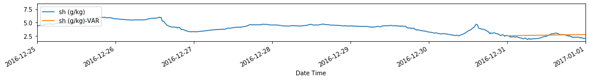
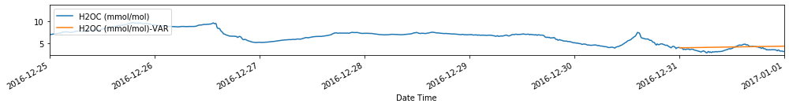
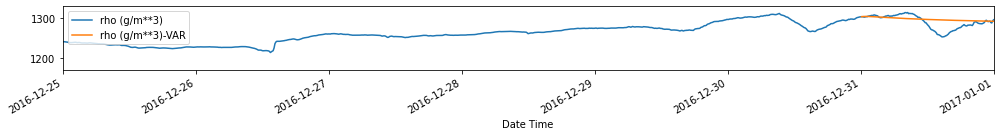
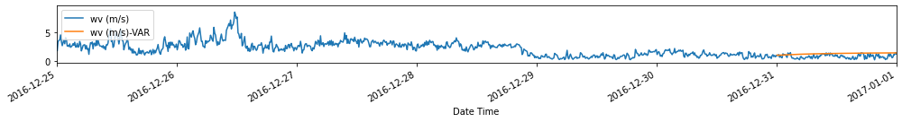
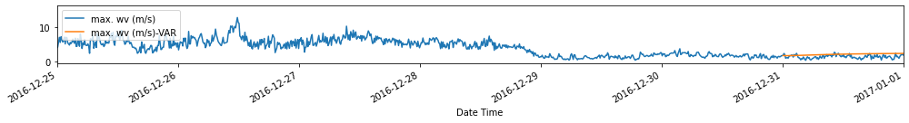
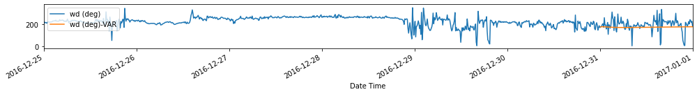
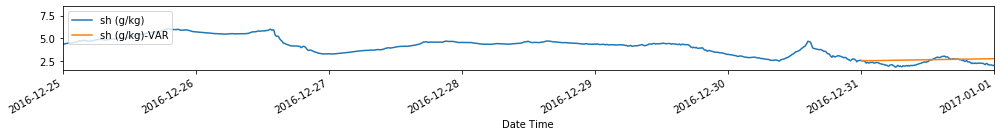
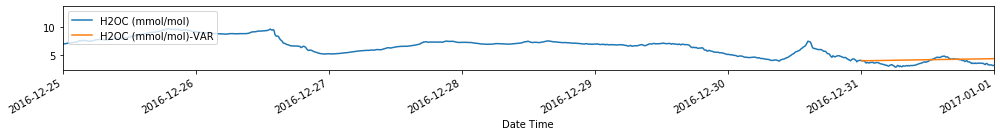
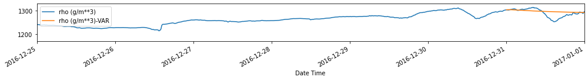
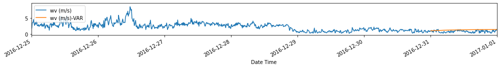
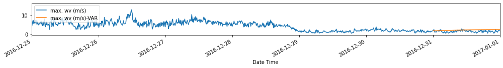
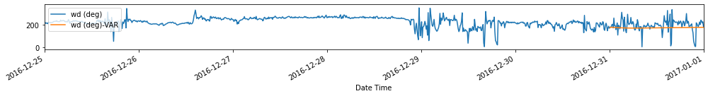
Takeaways¶
VAR methods are useful when dealing with multivariate time series, as they allow us to use the relationship between the different variable to forecast.
These models allow us to forecast the different variables simultaneously, with the added benefit of easy (only 1 hyperparameter) and fast training.
Using the fitted VAR model, we can also explain the relationship between variables, and how the perturbation in one variable affects the others by getting the impulse response functions and the variance decomposition of the forecasts.
However, the application of these models is limited due to the stationarity requirement for ALL the variables in the multivariate time series. This method won’t work well if there is at least one variable that’s non-stationary. When dealing with non-stationary multivariate time series, one can explore the use of vector error correction models (VECM).
Another limitation of the VAR method is the assumption that all the variables in the system has the same order \(p\).
In the next chapter, we further extend the use of VAR models to explain the relationships between variables in a multivariate time series using Granger causality, which is one of the most common ways to elucidate underlying causal mechanisms in time series data.